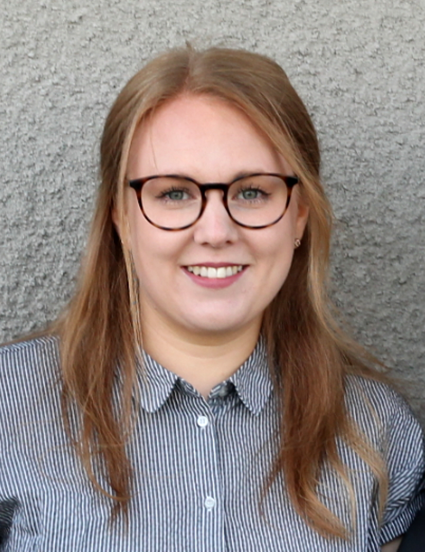

CV Joséphine Simar
Kommunikativ och kreativ med många olika kompetenser, framför allt inom språkhantering och berättande.
Drivs av att det egna lärandet och har ett stort behov av skapande i olika former.
Fritiden fylls med diverse handarbeten, naturvistelse och biodling.
Arbetslivserfarenhet
- Förläggare/textbearbetare/delägare, Bymarken Förlag 2014—nu
- Journalist/lokalredaktör, Hall Media 2019-2020
- Digital redaktör/journalist, Sveriges Radio P4 Jönköping 2017-2019
- Förskolepersonal, Bäckgatans förskola 2016-2017
- Videoproducent/ljudtekniker, Lakehouse Studios 2014-2016
- Au pair, Katalonien sommaren 2010
Utbildning
- Webbutvecklare .net 400yhp, Jönköping University 2020—2022
- Journalistik och medieproduktion 180hp, Linnéuniversitetet 2011—2014
- Journalism, multimedia and world politics, Danmarks Medie- og Journalisthöjskole, Århus 2013